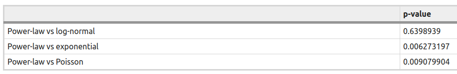

Analysis of Epidemic Data
Existing Tools and Methods
Existing literature:
Mainly 3 categories
- Individual Based Models
- Mean Field Models
- Based on Branching process, Birth-Death process
Another type: Analysing network / graph structure (for contact tracing data)
A social network analysis of the spread of COVID-19 in South Korea and policy implications (Nature, April'21)
Objective: Creating an infection network and analysing its structural characteristics.Data: 3283 patients, January'20 - July'20
For all patients, sources were categorized as personal (972), group (869), overseas (748), unknown (694)
Analysis methods
- Network analysis
- Distribution of out-degree
- Structural changes after removal of nodes
1. Network Analysis
- Computation of out-degree of each node
- Mean distance of network
- Diameter of network

2. Distribution of out-degree
Power-law distribution was fitted on out-degrees. Fitted distribution: $p\left(x\right)\propto {x}^{-2.70923}$
2. Distribution of out-degree
Hypothesis testing: Power-law against Log-normal, Exponential, PoissonUsing Likelihood-Ratio test, only Log-normal was accepted. Exponenial, Poisson strongly rejected.

3. Network structure change depending on time and policy
Removal of nodes of high-degree and observing how the previously defined measures change. Out-degree values are: (51, 25, 21, 18, 17, 16, 13, 11, 10, 8, 7, 6, 5, 4, 3, 2, 1)


Regarding partial observed network:
Quantifying SARS-CoV-2 transmission suggests epidemic control with digital contact tracing (Science, 2020)
Detailed analysis on:Modelling and predicting the spatio-temporal spread of COVID-19 in Italy (2020)
Objective: Analyse the diffusion of COVID-19 in Italy, and find spatial and temporal effectsData: 26th Feb - 31st May'20, 96 days, Cases in Italy

$Y_{r,t}=$ number of cases in region r on day t, modelled using Negative Binomial, conditional on previous cases
Mean $\mu_{r,t}$ and dispersion $\psi_r$
Mean is decomposed into three parts:
- Epidemic-within
- Epidemic-between
- Endemic